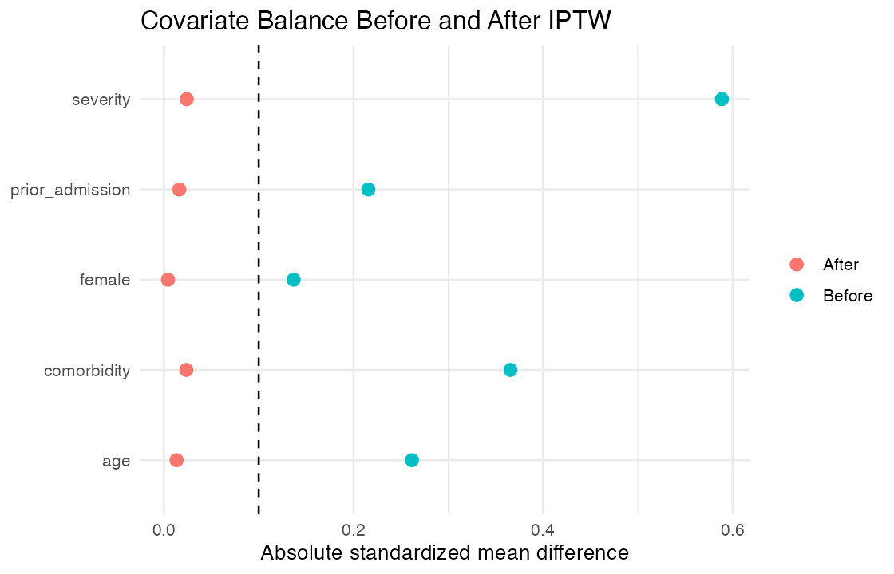

Question: What is the average treatment effect on the risk of the clinical outcome after controlling measured confounding?
A prespecified logistic propensity-score model used age, sex, comorbidity, severity, and prior admission. Stabilized inverse-probability weights target the ATE; percentile trimming evaluates sensitivity to extreme weights. Balance is assessed with standardized mean differences.
Trimmed IPTW risk difference: -0.038 (95% CI -0.061 to -0.014).

The estimate is conditional on consistency, positivity, correct propensity-score specification, and no unmeasured confounding. The balance plot is a design diagnostic, not proof that these assumptions hold.
Run Rscript run_all.R. Data are synthetic.